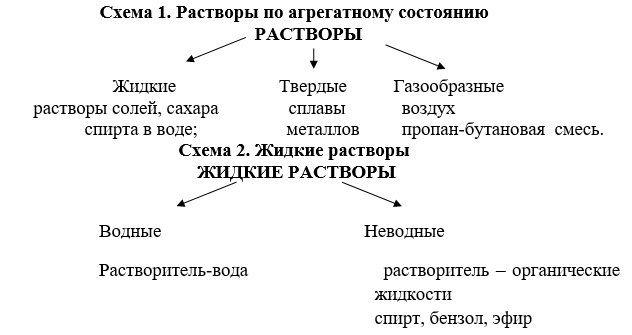
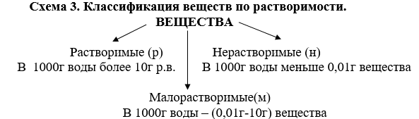
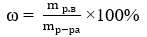
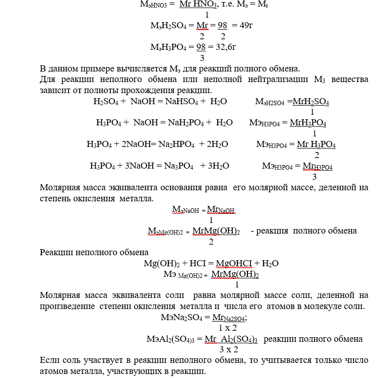
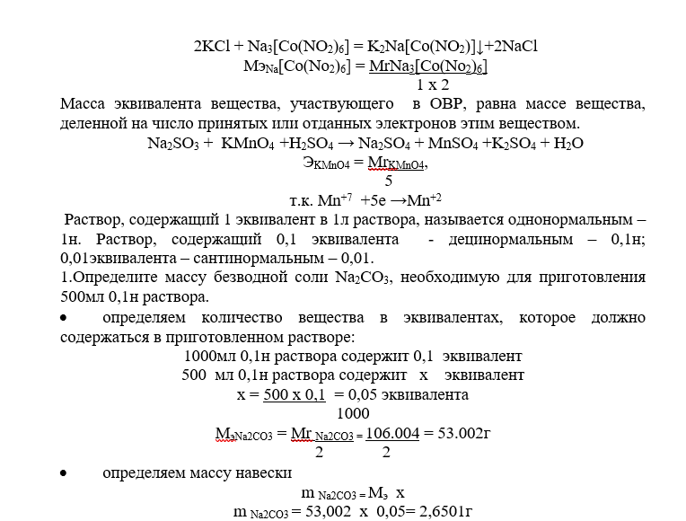

Понятие о растворах
Растворами называются гомогенные системы, состоящие из двух или более компонентов, состав которых может непрерывно меняться в определенных пределах.
Компоненты растворов – растворитель и растворенные вещества.
Растворитель – вещество, которое в чистом виде находится в том же агрегатном состоянии, что и образовавшийся раствор.
Если до образования раствора оба вещества находились в том же агрегатном состоянии, растворителем считается то вещество, которое находится в большем количестве.

Растворение – физико-химический процесс.
При физическом процессе происходит разрушение структуры растворяемого вещества и распределение его частиц между молекулами растворителя.
Химический процесс – это взаимодействие молекул растворителя с частицами растворенного вещества. В результате этого взаимодействия образуются сольваты. Если растворителем является вода, то образующиеся сольваты называются гидратами. Сольватация – процесс образования сольватов; гидратация – процесс образования гидратов.
При упаривании водных растворов образуются кристаллогидраты – это кристаллические вещества, в состав которых входит кристаллизационная вода (CuSO4.5Н2О) – пентагидрат сульфата меди (П); FeSO4.7Н2О – гентагидрат сульфат железа П).
Физический процесс идет с поглащением энергии, химический – с выделением. Если в результате гидратации (сольватации) выделяется больше энергии, чем ее поглащается при разрушении структуры вещества, то растворение – экзотермический процесс. Выделение энергии наблюдается при растворении гидроксида натрия, карбоната натрия, серной кислоты, сульфата цинка и др.
Если для разрушения структуры вещества необходимо больше энергии, чем ее выделяется при гидратации, то растворение – эндотермический процесс (растворение в воде нитрата натрия, хлорида калия, нитрата аммония,сульфата калия, нитрита калия, хлорида аммония).
Количество энергии – которое выделяется или поглащается при растворении называется тепловым эффектом растворения.
Растворимость веществ – способность вещества растворяться в воде или другом растворителе. Коэффициент растворимости показывает, какая максимальная масса вещества может раствориться в 1000 или 100г воды при данной температуре. Растворимость вещества зависит от природы растворителя и вещества, от температуры и давления (для газов). Растворимость твердых веществ в основном увеличивается при повышении температуры. Растворимость газов с повышением температуры уменьшается, но при повышении давления увеличивается.

Насыщенный раствор –это раствор, который содержит максимальное количество растворяемого вещества при данных условиях. При добавлении вещества в такой раствор вещество больше не растворяется.
Ненасыщенный раствор – это раствор, который содержат меньше растворяемого вещества, чем насыщенный при данных условиях. При добавлении вещества в такой раствор вещество еще растворяется.
Перенасыщенный раствор – это раствор, содержащий растворенного вещества больше, чем в насыщенном растворе при данной температуре. Этот раствор можно получить при осторожном охлаждении насыщенного раствора до комнатной температуры. Перенасыщенные растворы очень неустойчивы. Кристаллизацию вещества в таком растворе можно вызвать путем потирания стеклянной палочкой стенок сосуда, в котором находится данный раствор. Этот способ применяется при выполнении некоторых качественных реакций.
2. Концентрация растворов
Содержание вещества в растворе моет быть выражено в массовых долях растворенного вещества, в молях на литр раствора, в эквивалентах на литр раствора, в граммах или миллиграммах на миллилитр раствора.
Массовая доля растворенного вещества выражается в долях или процентах. Массовая доля растворенного вещества (ω) выражает в процентах отношение массы растворенного вещества (m р.в) к общей массе раствора (mр-ра).

2.1.Расчеты приготовления растворов солей
1.Рассчитать и приготовить 500г 5% раствора нитрата калия.
ω = 〖m 〗_(р.в)/m_(р-ра) ×100%
найдем массу соли, необходимую для приготовления раствора
m р.в = ω × mр-ра / 100%
m р.в = 5% ×500 г / 100% = 25 г
рассчитаем массу воды, необходимую для приготовления этого раствора.
m н2о= m р.в - m р.в =500 г - 25 г = 475г
VH2O=ρ х m = 1 х 475= 475мл
Для приготовления раствора 25г нитрата калия растворяют в 475 мл воды.
2. Рассчитать и приготовить 500г 5% раствора хлорида калия из кристаллогидрата СаСl2 х 6Н2О
определяем массу безводной соли СаСl2
m р.в = ω × mр-ра / 100%
m р.в = 5% ×500 г / 100% = 25 г
производим перерасчет на кристаллогидрат
Мr (CaCl2) = 111г/моль;
Mr (CaCl2 x 6H2O )= 219г/моль
Масса любого вещества численно равна его молярной массе. Следовательно
219г СаСI2 x 6Н2О - 111г СаСI2
х г СаСI2 x 6Н2О - 25г СаСI2
х = 219г х 25г = 49,3
111г
рассчитаем необходимый объем воды
mH2O= 500г – 49,3 = 450,7г или 450,7мл
2.2.Расчеты приготовления растворов кислот
1. Приготовить 500г 10% раствора хлороводородной кислоты, исходя из 38% раствора
• Найдем массу НCI,которая должны быть в приготовленном растворе.
По таблице в приложении “Плотность водных растворов кислот” находим
1л р-ра НСI(10%) содержит 104,7г НСI
0,5л - х
х = 104,7 х -0,5 = 52,35г НСI
• найдем объем 38%кислоты, необходимый для приготовления раствора по таблице
1000мл р-ра НСI содержит 451,6г НСI
х - 52,35г
х = 1000 х 52,35 = 115 мл
451,6
• определим объем воды
VH2O = Vp-pa – V k-т = 500мл – 115мл = 385мл
Следовательно, для приготовления 500мл 10% раствора хлороводородной кислоты нужно взять 115мл 38% раствора НСI и 385мл Н2О.
2.3. Расчет молярной концентрации.
Молярная концентрация определяется количеством молей вещества в 1л раствора (моль/л).
Молярной концентрацией раствора (См) называют количество растворенного вещества в молях (п) к определенной объему этого раствора (V) в литрах.
См = n/(V )
n = m/Мr
См =m/МrV
Если в 1л раствора содержится 1 моль растворенного вещества, то раствор называется молярным (М); если в 1л раствора содержится 0,1моль растворенного вещества, то раствор называется децимолярным 0,1М; если в 1л раствора содержится 0,01моль растворенного вещества, то раствор называется сантимолярным 0,01М.
1. Рассчитайте массу хлорида бария, необходимую для приготовления 2л раствора, молярная концентрация которого 0,2моль/л.
Определяем количество вещества ВаСI2, которое должно содержаться в приготовленном растворе
n = См х V
n = 0,2моль/ х 2л = 0,4моль
2.Рассчитываем навеску соли
m =Mr x n;
m = 208,27 х 0,4 = 83,308г BaCI2
Для приготовления 2л 0,2моль раствора требуется 83,308г ВаСI2.
2.4.Расчет нормальности раствора.
Молярная концентрация эквивалента (нормальность раствора, н., N) определяется числом эквивалентов растворенного вещества в 1л раствора.
Эквивалент – это реальная или условная частица, которая может присоединить или вытеснять 1 протон водорода в кислотно-основных реакциях или быть эквивалентной 1 электрону в окислительно-восстановительных реакциях. В любой реакции вещества реагируют в эквивалентных количествах.
Для того чтобы готовить растворы, содержащие определенное количество эквивалентов данного вещества, необходимо знать, как подсчитать молярную массу эквивалента Мэ , т.е. массу 1 эквивалента.
Значение эквивалента и масса эквивалента не является постоянной величиной для данного соединения, а зависит от реакции, в которую вступает соединение.
Молярная масса эквивалента кислоты равна ее молярной массе, деленной на основность кислоты.

